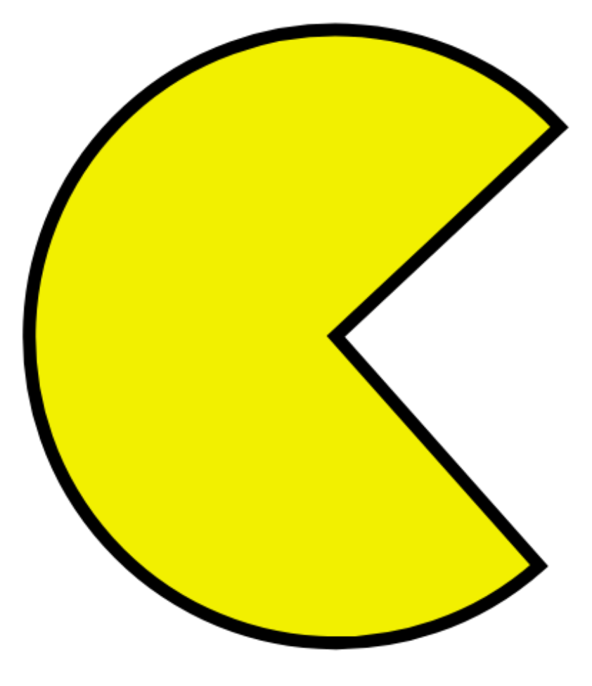
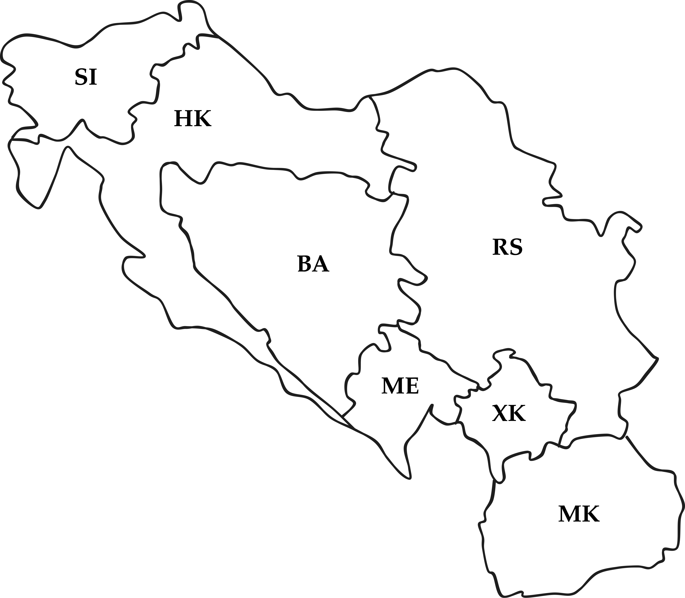
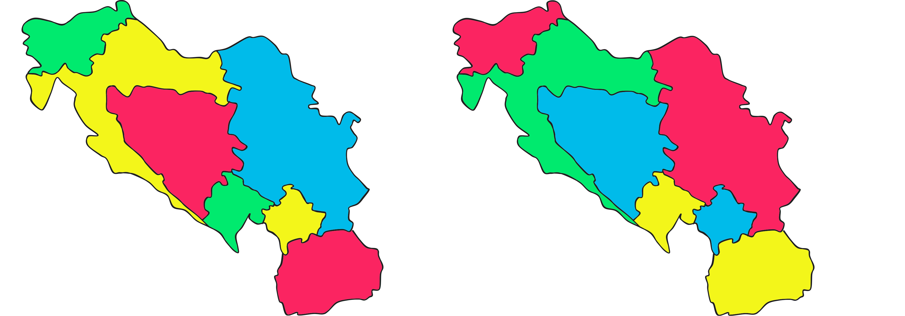
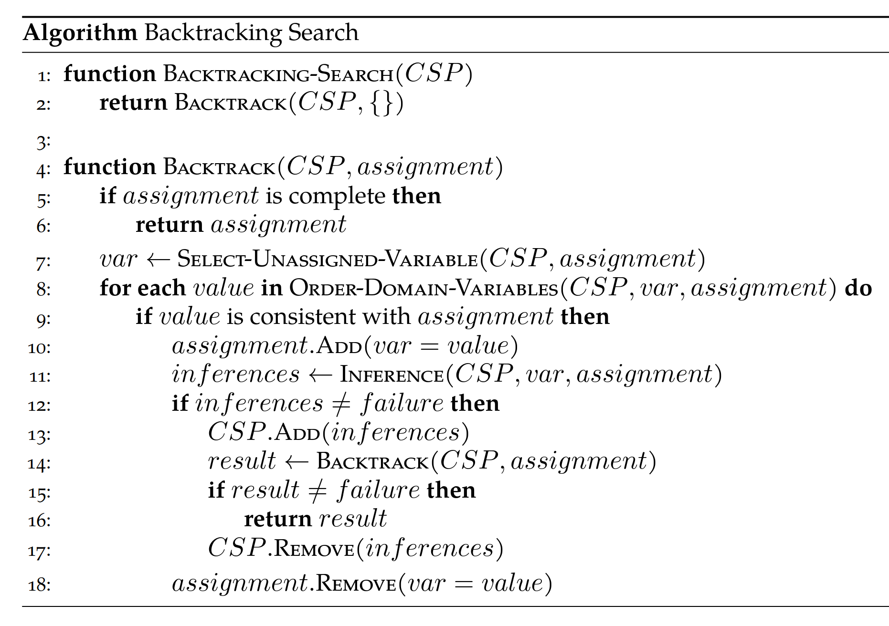
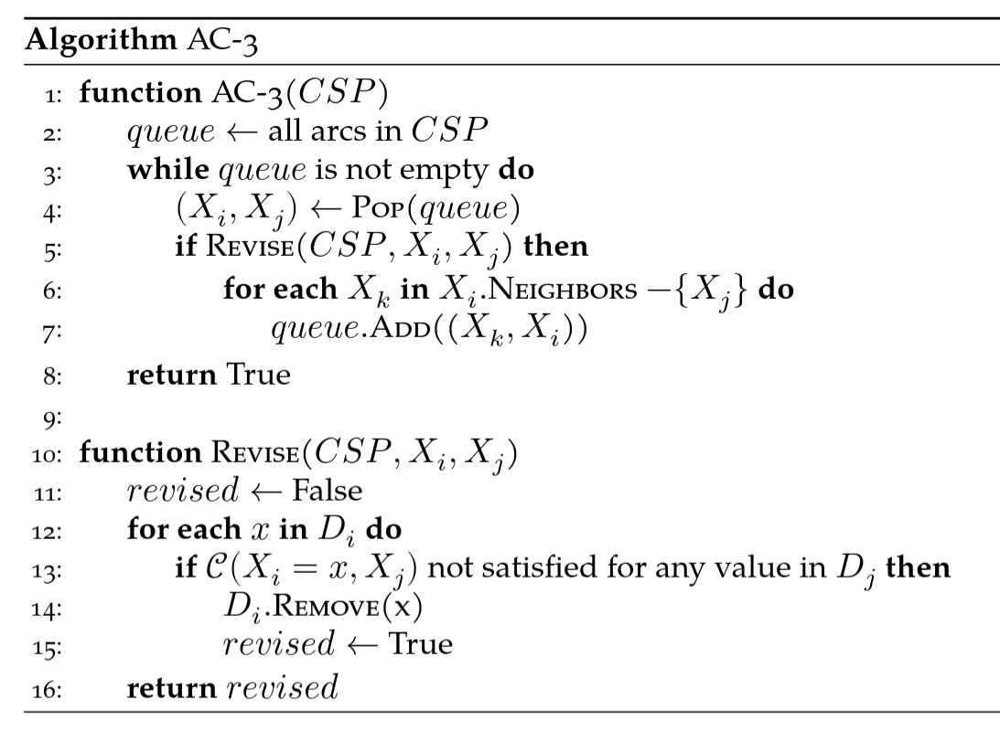
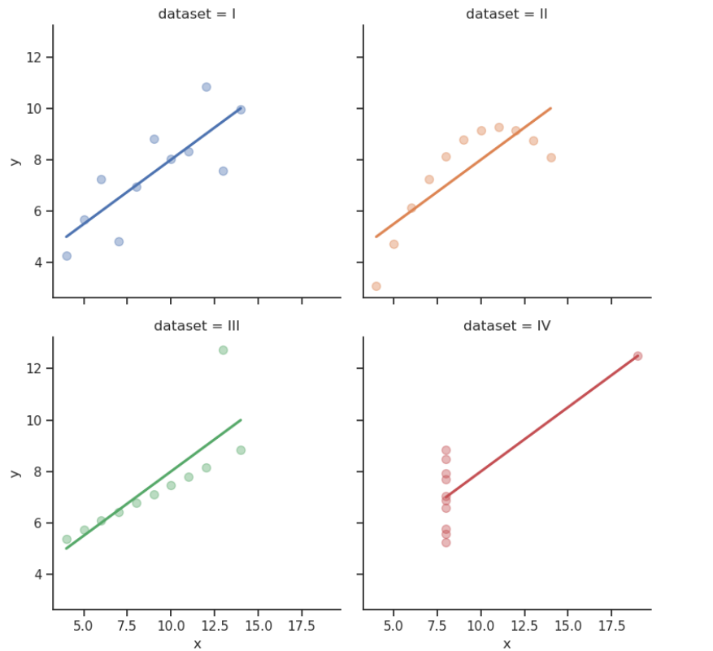

CSCI 4511/6511
Previously: Max and Min alternate turns
Now:
😣

🫠
What is to be done?
Why?

Two possibilities:

Why have two different representations?
Constraint graph: edges are constraints
Constraint hypergraph: constraints are nodes


Backtracking search:
Tree-structured CSPs:
Linear time solution
Directional arc consistency: \(X_i \rightarrow X_{i+1}\)
Cutsets
Sub-problems
\[\begin{aligned} \max_{x} \quad & \boldsymbol{c}^T\boldsymbol{x}\\ \textrm{s.t.} \quad & A\boldsymbol{x} \leq \boldsymbol{b}\\ &\boldsymbol{x} \geq 0 \\ \end{aligned}\]
\[\begin{aligned} \min_{x} \quad & f(\boldsymbol{x})\\ \textrm{s.t.} \quad & g_i(\boldsymbol{x}) \leq 0\\ & h_i(\boldsymbol{x}) = 0 \\ \end{aligned}\]
\[P(x) = \lim_{n \to \infty} \frac{n_x}{n}\]
…if you thought this course was going to be about LLMs
Possible combinations:
\[\binom{n}{k} = \frac{n!}{k!(n-k)!}\]
Of a variable: \[E[X] = \sum_{i=0}^n x_i \cdot p(x_i)\]
Of a function of a variable:
\[E[g(x)] = \sum_{i=0}^n g(x_i) \cdot p(x_i) \neq g(E[X])\]
\[\text{Var}(X) = E[(X - E[X])^2]\]
\[\begin{align}\text{Var}(X) & = E[(E[X]-\mu)^2]\\ & = \sum_x (x-\mu)^2 p(x) \\ & = \sum_x (x^2 - 2 x \mu + \mu^2) p(x) \\ & = \sum_x x^2 p(x) - 2 \mu \sum_x x p(x) + \mu^2 \sum_x p(x) \\ & = E[X^2] - 2 \mu \mu + \mu^2 \\ & = E[X^2] - E[X]^2 \end{align}\]

Stuart J. Russell and Peter Norvig. Artificial Intelligence: A Modern Approach. 4th Edition, 2020.
Mykal Kochenderfer, Tim Wheeler, and Kyle Wray. Algorithms for Decision Making. 1st Edition, 2022.
Stanford CS231
Stanford CS228
UC Berkeley CS188